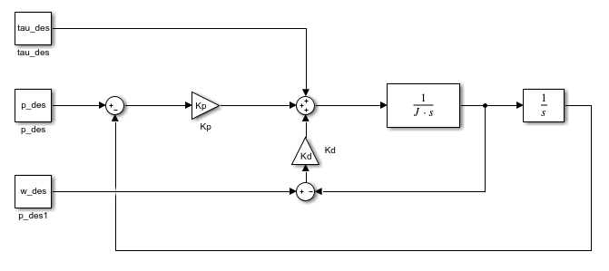
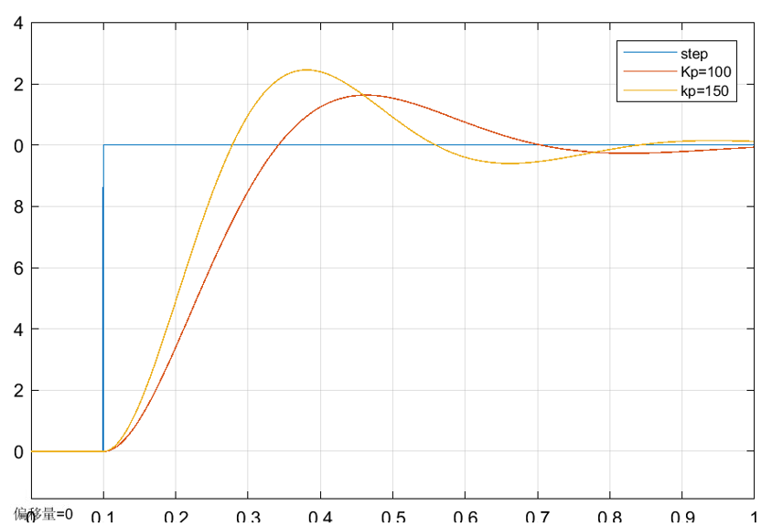
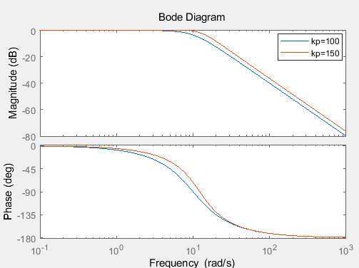
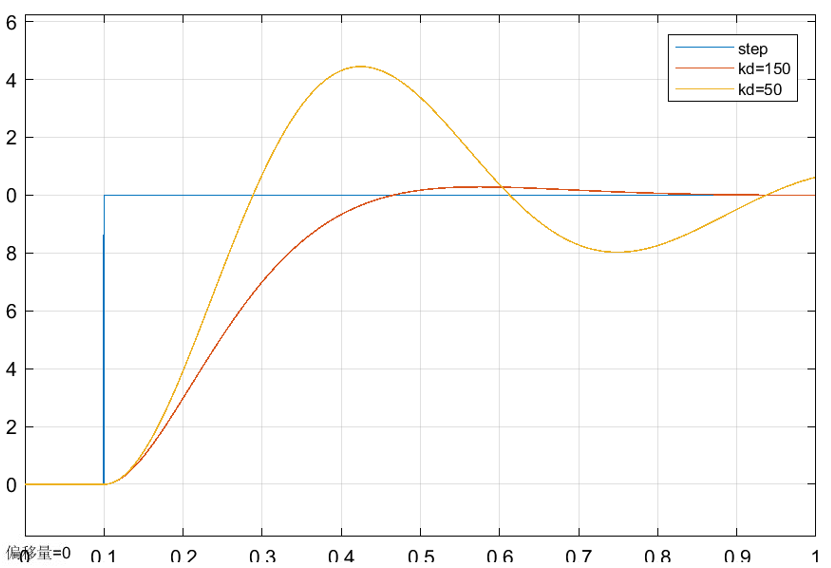
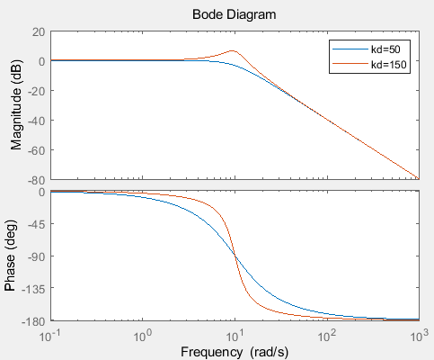
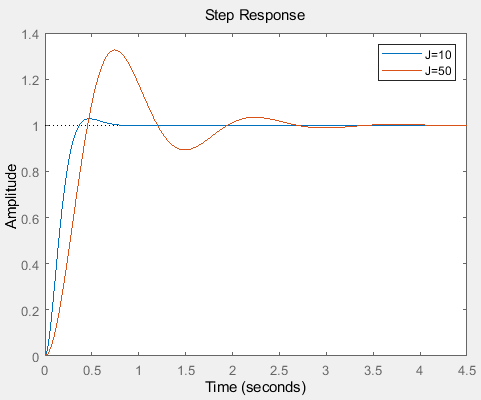
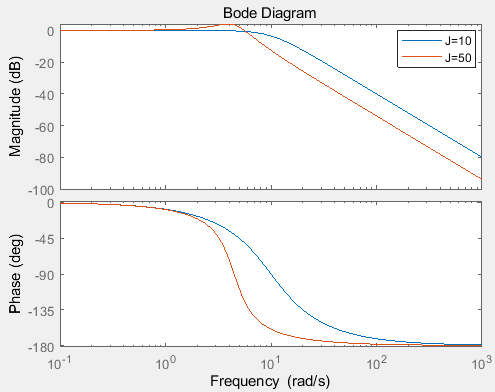
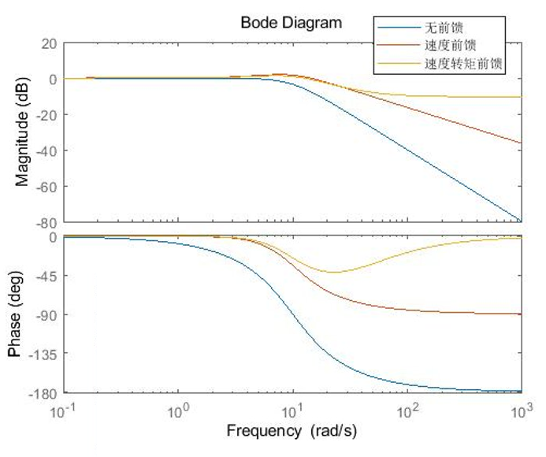
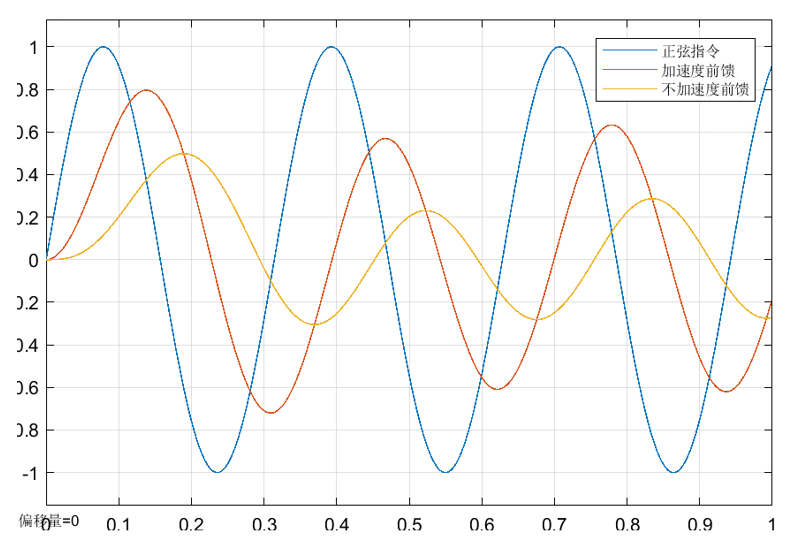
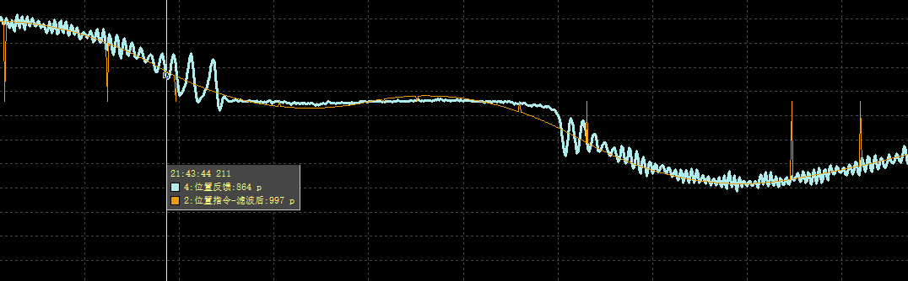

PD控制器
控制率
PD控制器控制率如下：
其中：
$k_p$:位置刚度
$k_d$:速度刚度
$p_d$:期望位置
$\omega_d$:期望速度
$\tau_f$:前馈力矩
以被控对象为最简单的 $\frac{1}{Js}$ 为例（$J$ 为负载惯量），控制框图如下：

普通位置模式
位置模式下只有位置指令，
整理后传递函数为标准二阶系统：
其中$\omega_n$为带宽，控制系统响应；$\zeta$控制超调量。
根据以上公式，可以大概整定出一套较为合适的增益参数。
Kp
参数$k_p$主要控制系统响应性能，频域上主要与带宽相关，时域上与阶跃响应上升时间相关。
阶跃响应如下：

频域bode图如下：

Kd
参数$k_d$主要控制系统阻尼，频域上主要与带宽附近突峰相关，时域上与超调震荡情况相关。
阶跃响应如下：

频域bode图如下：

J
参数为负载惯量，在相同参数下，负载惯量变大可能会引起震荡和响应变慢
阶跃响应如下：

频域bode图如下：

前馈对系统的影响
前馈$\tau_f,\omega_d$不为0时同样会对位置响应造成影响，可以通过控制框图推得传递函数。
从目标位置$p_d$到实际位置的传函为：
从目标速度$\omega_d$到实际位置的传函为：
从前馈力矩$\tau_f$到实际位置的传函为：
如果令目标速度$\omega_d=p_ds$，即位置的微分
令前馈力矩$\tau_f=Jp_ds^2$，即加速度和负载转矩的积
那么系统传函将会由变为：
这是最理想的状况，频域bode图如下（其中转矩前馈没有完全补偿，若完全补偿则变为一条幅值0dB，相位0deg的直线）：

速度前馈能够提高系统中高频响应，但会带来中频突峰，时域上表现为响应变快，可能有超调。

加速度前馈能够提高系统高频响应，同时压制速度前馈中频突峰，但由于多次微分可能会引入高频噪声。
带前馈的位置模式
在普通位置模式达不到响应要求的前提下，可以计算指令速度作为前馈加入到系统中，可以提高系统响应能力。
现实电机负载系统
以上都是建立在被控对象为最简单的得到的结论，然而实际上有很多其他不理想情况。
负载变化，负载变化会引起发生变化。导致系统带宽、阻尼发生变化。
摩擦力，诸如静摩擦，粘滞摩擦等。由于控制器没有积分环节，摩擦力会导致位置静差。
下图为自研电机实测由于静摩擦力在低速时跟随效果不好。

- 周期性扰动。诸如齿槽转矩波动，机械传动等都会由负载转矩引入，体现在转矩与速度波动上。
如果要求比较高，需要对以上扰动进行补偿。